Paso a paso, en dos etapas: primero los productos simples a medida (toallas, banderines) y después las prendas con talles (camisetas, shorts, remeras).
Cómo usar esta guía. El índice de la página siguiente es clickeable: tocá un tema y vas directo.
En cada capítulo, "↑ Índice" te vuelve. El panel de marcadores del visor de PDF también tiene todos los temas.
En las capturas, los 1 números rojos señalan lo que se explica abajo de cada una.
Para quién
Administración y ventas: quien da de alta y configura los productos que se venden
Qué hay en la pantalla y cómo se lee, antes de crear el primer producto.
Dónde está la pantalla
En el menú, la opción Configurar Productos (está en el grupo de administración y la ven los usuarios Admin).
También podés entrar escribiendo /configurar-productos después de la dirección del sistema.
ReglaEsta pantalla solo lee de TIZADA PRO: los moldes, las variables a medida, las piezas, los talles y las telas permitidas se cargan en TIZADA PRO. Acá se elige cuál usa cada producto.
Las partes de la pantalla
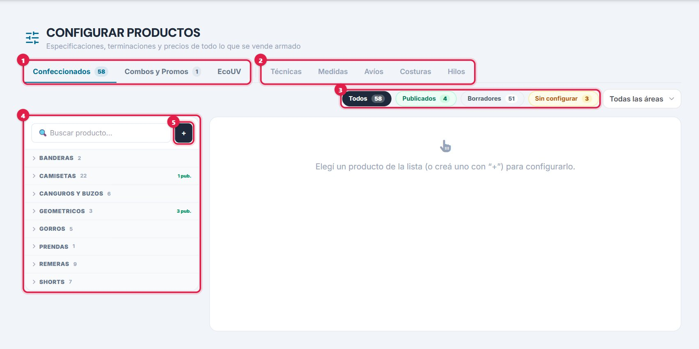
Figura 1. Configurar Productos, pestaña Confeccionados.
1Lo que se vende: Confeccionados (los productos de esta guía), Combos y Promos y EcoUV. El número es cuántos hay.
2Catálogos que usan los productos: Técnicas, Medidas, Avíos, Costuras, Hilos.
3Filtro por estado: TodosPublicadosBorradoresSin configurar. Al lado, Todas las áreas filtra por producción principal.
4La lista de productos, agrupada por familia, con el buscador Buscar producto… arriba.
5El botón + (Nuevo producto): abre el alta.
La lista: familia › etiqueta › producto
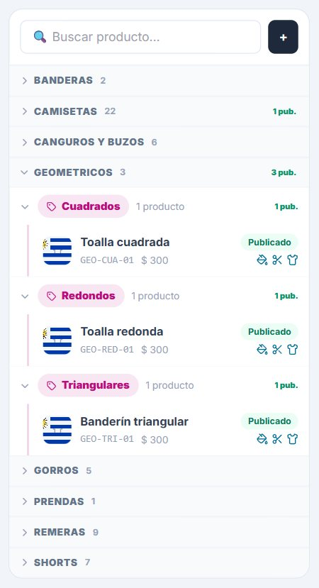
Figura 2. Geometricos y sus etiquetas.
Cada familia (Banderas, Camisetas, Geometricos, Shorts…) se abre con un clic. Adentro, los productos se agrupan por etiqueta, que dice para qué es el producto: en Geometricos hay Cuadrados, Redondos y Triangulares.
Cada producto muestra:
el nombre y el estado: Publicado, Borrador o Sin configurar;
el código (ej. GEO-TRI-01) y el precio (o "sin precio");
los íconos de sus técnicas (sublimación, corte, costura, bordado…);
si tiene variantes, una pastilla 2 var. y las variantes colgando debajo.
Hoy en Geometricos están Toalla cuadrada, Toalla redonda y Banderín triangular: sirven de modelo.
Los pasos y sus marcas
Al abrir un producto, a la derecha aparece el editor: arriba el encabezado y abajo los pasos. Cada paso tiene una marca:
Marca en el paso
Qué quiere decir
✓ tilde verde
Completo: tiene lo suyo. En "Revisar y publicar", el tilde quiere decir Publicado.
● punto ámbar
Le falta algo para guardar o publicar. Pasá el mouse por el paso: el globito dice "Falta: …".
3 el número
Sin cargar todavía.
Qué se guarda solo y qué con Guardar
Se aplica al instante (no espera a Guardar): la foto, el nombre y el código (lápiz ✎), la familia, la etiqueta, el dibujo de la ficha y el dibujo de las medidas.
Todo lo demás (origen, precio y lo de cada paso) se guarda con el botón de arriba a la derecha. Si no hay cambios dice Guardar; si hay cambios sin guardar se pinta y dice Guardar cambios.
OjoSi abrís otro producto sin guardar, los cambios se pierden. Mirá que el botón diga Guardar (sin "cambios") antes de irte.
A medida o con talles
Lo que más cambia de un producto a otro es el tipo de molde (se elige en el paso "Molde, telas y apliques"):
Tipo de molde
Para qué
En esta guía
A medida
"Pañuelo, toalla, bandera, banderín…": una sola pieza sin talles. La medida la dice cada pedido y TIZADA PRO arma el molde con esa medida.
Etapa 1 (capítulos 2 a 5). No tiene paso Variantes.
Con talles
"Prendas: camiseta, short, buzo…": varias piezas, talles y modelos cargados en TIZADA PRO.
ETAPA 1Productos simples a medida · familia Geometricos
2Crear el producto y su encabezado
Ejemplo: un banderín triangular nuevo, "DEMO GUIA Banderín", en Geometricos › Triangulares.
Alta: nombre, familia, etiqueta
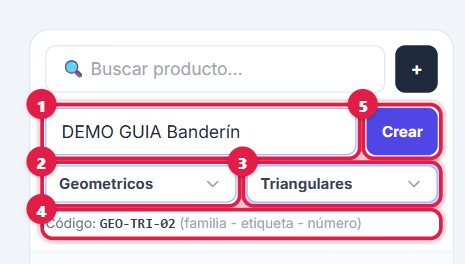
Figura 3. El alta, arriba de la lista.
En la pestaña Confeccionados tocá + y:
1 Escribí el nombre (el campo dice "Nombre (ej. Gorro de lana con TPU)").
2 Elegí la familia: Geometricos.
3 Elegí la etiqueta: Triangulares (o "Sin etiqueta").
4 Mirá el código: se arma solo, "(familia - etiqueta - número)". Acá: GEO-TRI-02.
5 Tocá Crear. Sale "✅ Creado con código GEO-TRI-02" y se abre el editor.
ConsejoSi la familia o la etiqueta no existen, en la misma lista están + Nueva familia y + Nueva etiqueta: se crean y quedan elegidas. Sin familia no deja crear: "Elegí la familia (Camisetas, Shorts…): el código sale de la familia y la etiqueta."
El encabezado del editor
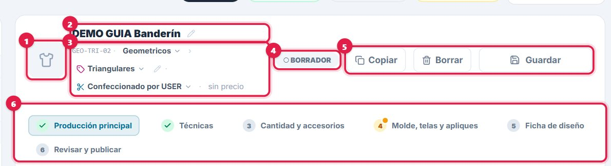
Figura 4. El producto recién creado: encabezado y pasos.
1Foto del producto: pasá el mouse y tocá "Subir foto". Es la que ve el cliente en el pedido web y en la solicitud. Se aplica al instante.
2Nombre y el lápiz ✎ para cambiar el nombre o el código ("El código solo se puede cambiar si el producto todavía no tiene pedidos").
3La línea de datos: código · familia › etiqueta · origen · precio. Cada uno es un desplegable. El origen queda en Confeccionado por USER (las otras opciones son Producto del local, Prenda del cliente y Local o del cliente).
4El estado: ○ BORRADOR o ● PUBLICADO.
5Copiar, Borrar (capítulo 10) y Guardar.
6Los pasos. En un producto a medida son: Producción principal · Técnicas · Cantidad y accesorios · Molde, telas y apliques · Ficha de diseño · Revisar y publicar.
Los tres primeros pasos. En un banderín o una toalla casi todo viene bien de entrada.
Paso 1 · Producción principal
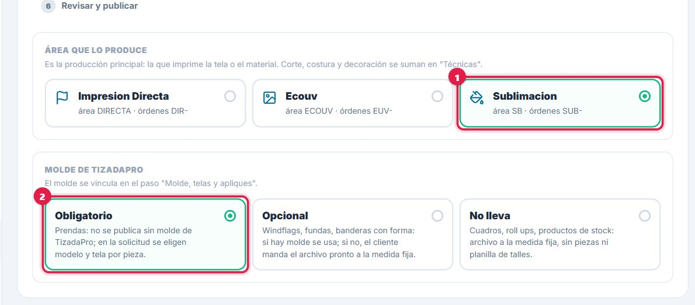
Figura 5. Área que lo produce y molde.
1Área que lo produce: "la producción principal: la que imprime la tela o el material". Para toallas y banderines sublimados: Sublimacion (área SB, órdenes SUB-). Las otras son Impresion Directa y Ecouv.
2Molde de TizadaPro: dejá Obligatorio. ("Opcional" y "No lleva" son para windflags, cuadros, roll ups: ahí aparece la medida fija del producto.)
Paso 2 · Técnicas
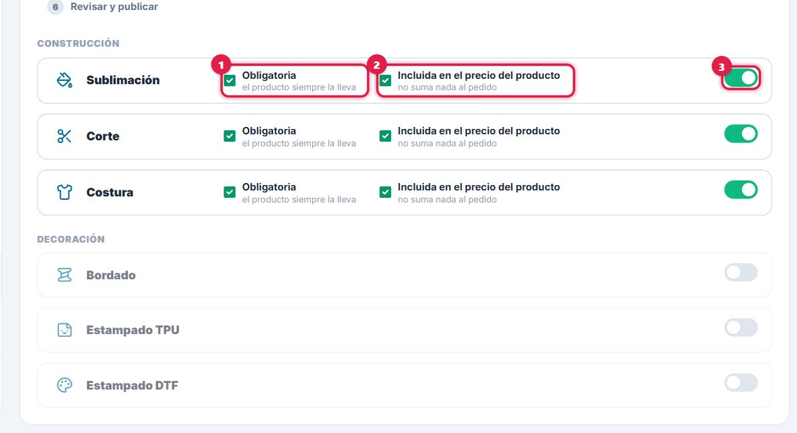
Figura 6. Construcción (arriba) y Decoración (abajo).
Un producto nuevo trae prendidas Sublimación, Corte y Costura, obligatorias e incluidas. En cada técnica:
1Tildada: Obligatoria "el producto siempre la lleva". Sin tilde: Opcional "el cliente decide si la agrega".
2Tildada: Incluida en el precio del producto "no suma nada al pedido". Sin tilde: Se cobra como servicio independiente "según lista de precios".
3El interruptor prende o apaga la técnica.
Un banderín liso no lleva decoración: Bordado, Estampado TPU y Estampado DTF quedan apagadas. (Cómo se configuran está en el capítulo 6.)
Paso 3 · Cantidad y accesorios
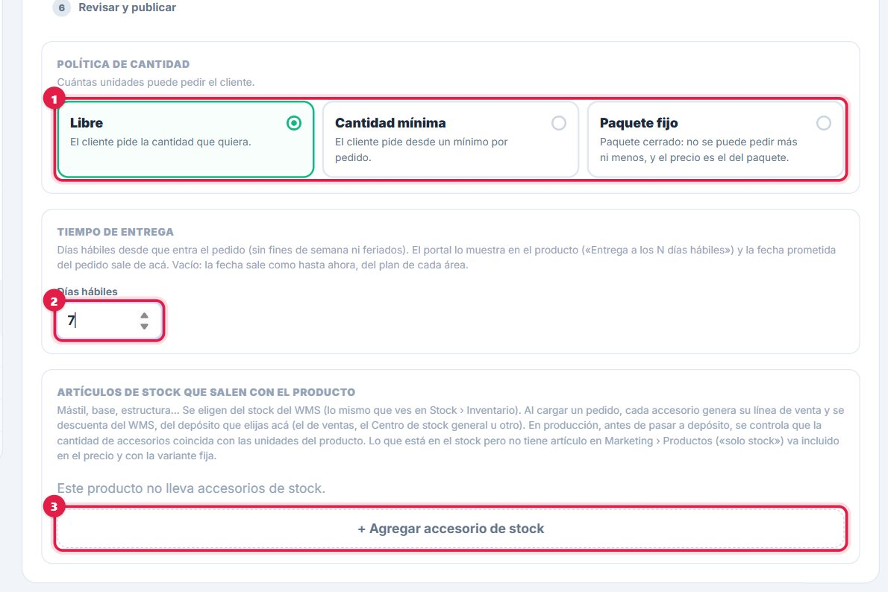
Figura 7. Política de cantidad, tiempo de entrega y artículos de stock.
1Política de cantidad: Libre ("El cliente pide la cantidad que quiera"), Cantidad mínima o Paquete fijo. Para el banderín: Libre.
2Tiempo de entrega · Días hábiles: desde que entra el pedido, sin fines de semana ni feriados. El portal muestra "Entrega a los N días hábiles" y la fecha prometida sale de acá. Vacío: la fecha sale del plan de cada área. Acá pusimos 7.
3+ Agregar accesorio de stock: mástil, base, estructura que salen con el producto (ver capítulo 6). El banderín no lleva.
Paso 4 · Molde, telas y apliques. Es el paso más importante de un producto a medida.
Tipo de molde y variable a medida
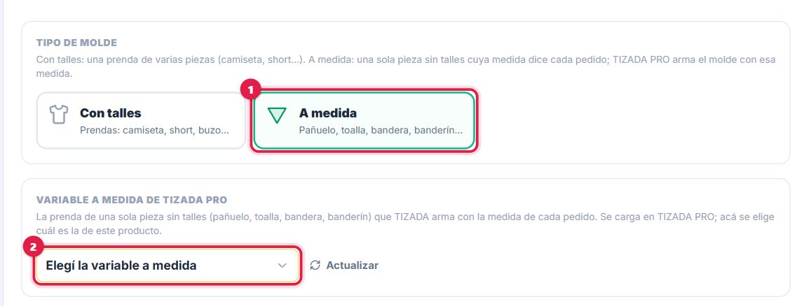
Figura 8. Tipo de molde: A medida.
1En Tipo de molde tocá A medida ("Pañuelo, toalla, bandera, banderín…").
2En Variable a medida de TIZADA PRO abrí el desplegable "Elegí la variable a medida" y elegí la del producto. En el ejemplo: Bandera simple · Bandera simple.
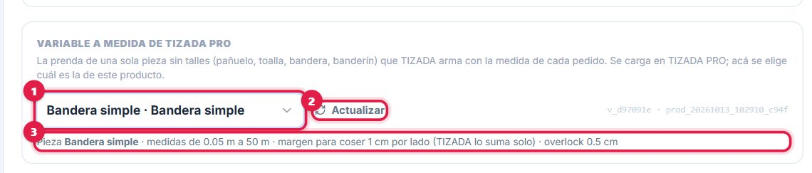
Figura 9. La variable elegida y lo que permite TIZADA.
1La variable elegida. Cada variable trae su molde de TIZADA PRO: al guardar, el molde del producto pasa a ser ese.
2Actualizar: vuelve a leer las variables de TIZADA PRO (por si cargaron una nueva).
3Lo que permite TIZADA: la pieza, las medidas mínima y máxima y el margen para coser ("TIZADA lo suma solo").
Si no aparece ninguna"TIZADA PRO todavía no tiene ninguna variable a medida: hay que cargarla allá." Si dice "No se puede leer TIZADA PRO: …", avisá a Sistemas.
Formas que se ofrecen y puntas del triángulo
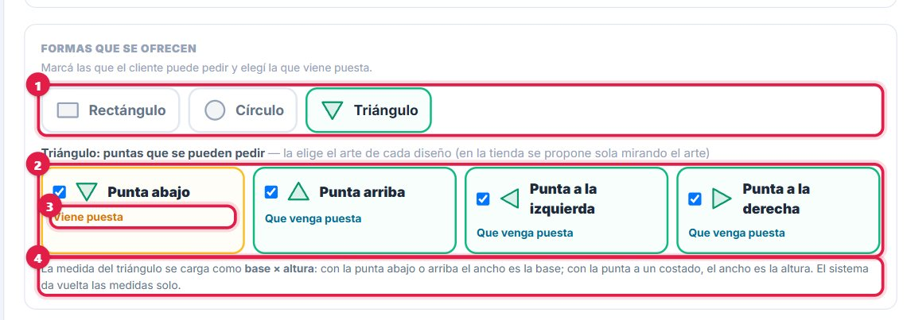
Figura 10. Solo triángulo, con sus puntas.
1Formas: Rectángulo, Círculo, Triángulo. Vienen todas marcadas; tocá para sacar las que no van (tiene que quedar al menos una). Si quedan varias, aparece "Viene puesta:" para elegir cuál viene de entrada.
2Triángulo: puntas que se pueden pedir: Punta abajo, arriba, a la izquierda, a la derecha. Tildá las que se aceptan. La punta la elige el arte de cada diseño (en la tienda se propone sola mirando el arte).
3"Viene puesta" marca la punta de entrada; en las otras, "Que venga puesta" la cambia.
4La medida del triángulo se carga como base × altura. Con la punta a un costado, el sistema da vuelta las medidas solo.
Terminación del borde
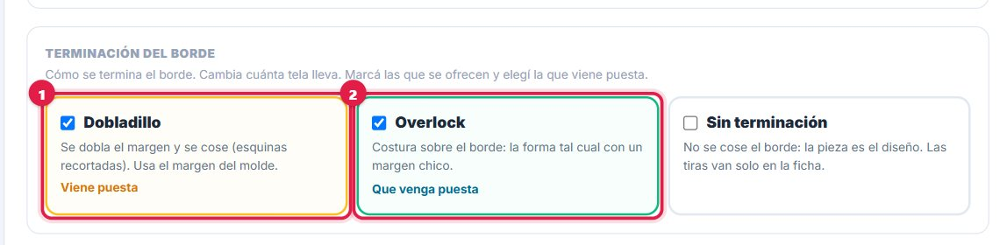
Figura 11. Dobladillo (viene puesta) y Overlock.
"Cómo se termina el borde. Cambia cuánta tela lleva." Tildá las que se ofrecen y elegí con "Que venga puesta" la de entrada:
Dobladillo: se dobla el margen y se cose (esquinas recortadas). Usa el margen del molde.
Overlock: costura sobre el borde: la forma tal cual con un margen chico.
Sin terminación: no se cose el borde; la pieza es el diseño. Las tiras van solo en la ficha.
Medidas
"La medida es la del DISEÑO, en metros (lo que se ve). TIZADA le suma el margen para coser: nunca lo sumes vos." Hay dos formas:
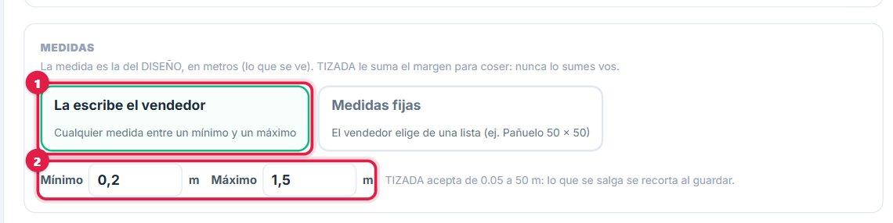
Figura 12. La escribe el vendedor: mínimo y máximo.
1La escribe el vendedor: cualquier medida entre un mínimo y un máximo.
2Mínimo y Máximo en metros (ej. 0,2 y 1,5). TIZADA acepta lo que dice su variable: lo que se salga se recorta al guardar.
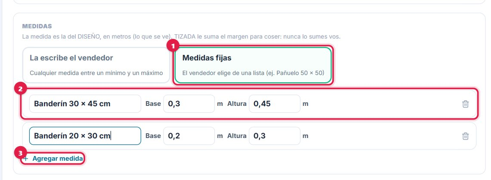
Figura 13. Medidas fijas: una lista para elegir.
1Medidas fijas: el vendedor elige de una lista.
2Cada medida: un nombre (ej. "Banderín 30 × 45 cm") y los metros. En el triángulo: Base y Altura (de la base a la punta); en el rectángulo, Ancho y Alto; en el círculo, Diámetro. El tacho la quita.
3Agregar medida suma otra. Sin ninguna en la lista, al guardar queda como "La escribe el vendedor".
Ojo al escribirSi la medida empieza con cero (ej. 0,3), al tipearla el cero de adelante desaparece y queda .3. Es el mismo valor: 0,3 m.
Telas que se ofrecen
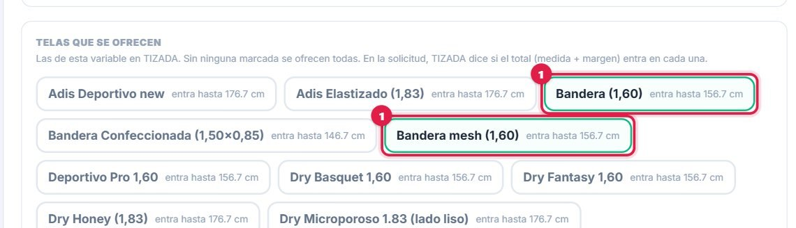
Figura 14. Las telas de la variable (siguen más abajo). Marcadas: Bandera (1,60) y Bandera mesh (1,60).
Son las telas de la variable en TIZADA. Tocá las que se pueden usar 1; sin ninguna marcada se ofrecen todas. "entra hasta … cm" es el ancho útil de cada tela: en la solicitud, TIZADA avisa si la medida más el margen no entra.
Tiras
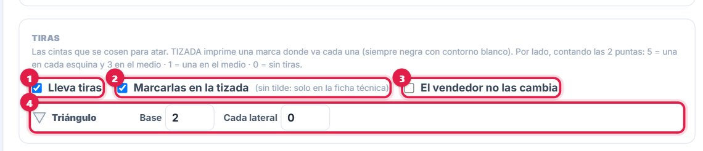
Figura 15. Dos tiras en la base del triángulo.
1Lleva tiras: las cintas que se cosen para atar.
2Marcarlas en la tizada: TIZADA imprime una marca donde va cada una. Sin tilde, van solo en la ficha técnica.
3El vendedor no las cambia: deja fijas las cantidades.
4Cuántas por lado, contando las 2 puntas: 5 = una en cada esquina y 3 en el medio · 1 = una en el medio · 0 = sin tiras. En el triángulo: Base y Cada lateral.
Archivos de impresión
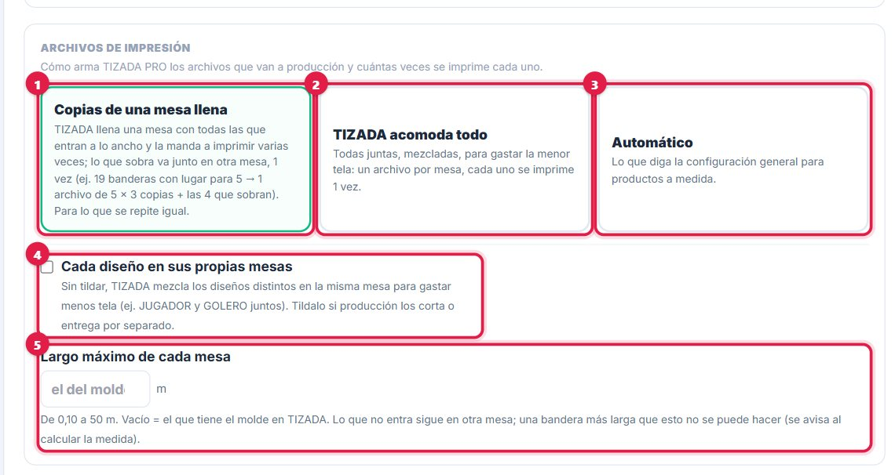
Figura 16. Cómo arma TIZADA PRO los archivos que van a producción.
1Copias de una mesa llena: TIZADA llena una mesa con todas las que entran y la manda a imprimir varias veces; lo que sobra va junto en otra mesa, una vez. Para lo que se repite igual.
2TIZADA acomoda todo: todas juntas, mezcladas, para gastar la menor tela. Cada archivo se imprime una vez.
3Automático: lo que diga la configuración general para productos a medida.
4Cada diseño en sus propias mesas: tildalo si producción corta o entrega cada diseño por separado.
5Largo máximo de cada mesa: de 0,10 a 50 m. Vacío = el que tiene el molde en TIZADA.
Apliques y Guardar
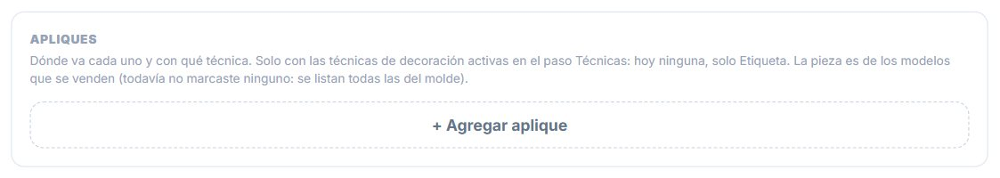
Figura 17. Apliques: el banderín no lleva.
Los apliques (escudos, números, etiquetas) solo se pueden cargar con las técnicas de decoración prendidas en el paso Técnicas (y siempre con Etiqueta). En un producto a medida la pieza es la única que tiene. Se explican en el capítulo 7.
Tocá Guardar cambios. Sale "✅ Guardado — DEMO GUIA Banderín (borrador)" y los pasos completos se marcan con ✓.
ReglaUn producto a medida no tiene paso Variantes: la forma, la punta, la medida y la tela las elige cada pedido.
1Referencia (REF): si la dejás vacía, la ficha usa el código. Marca viene en USER.
2Subir dibujo o imagen (después dice "Cambiar dibujo"). Se sube al instante. Si el producto no tiene foto, el dibujo queda también como su foto.
3Hacé clic sobre el dibujo para agregar una anotación con flecha. Se puede arrastrar.
4Abajo cambiás el texto de cada anotación (viene "Detalle"); la × la quita.
En el banderín alcanza con esto. Las medidas por talle, los avíos y la costura paso a paso se explican en la Etapa 2.
Precio
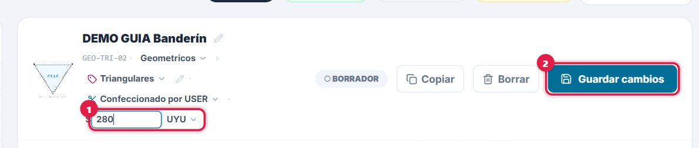
Figura 19. El precio, en la línea de datos del encabezado.
1 Donde dice "sin precio", escribí el precio (ej. 280). Al lado aparece la moneda: UYU o USD. Es el precio base sin servicios: bordado, TPU y DTF se suman al cotizar según el catálogo. 2 Se guarda con Guardar cambios.
Paso 6 · Revisar y publicar
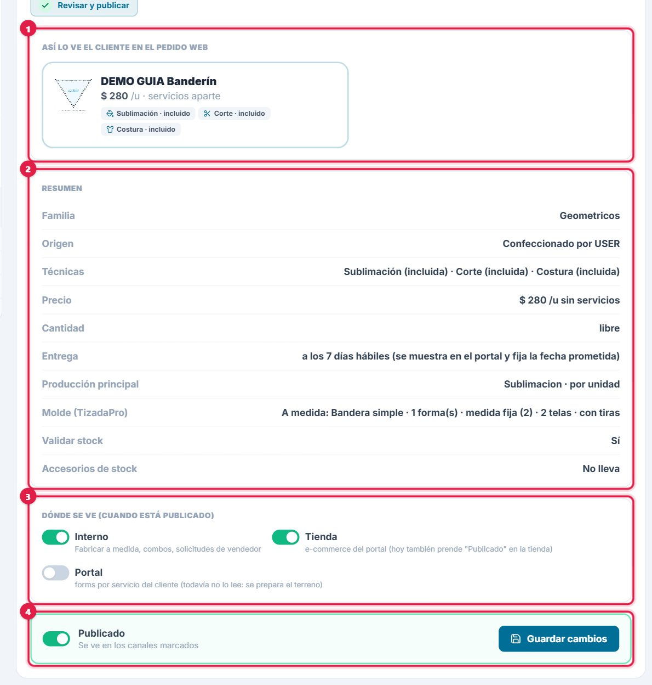
Figura 20. Vista previa, resumen, canales y publicar.
1Así lo ve el cliente en el pedido web: foto, nombre, precio "/u · servicios aparte" y las técnicas.
2Resumen: familia, origen, técnicas, precio, cantidad, entrega, producción principal, molde ("A medida: Bandera simple · 1 forma(s) · medida fija (2) · 2 telas · con tiras"), validar stock y accesorios. Lo que falta sale en ámbar.
3Dónde se ve (cuando está publicado): Interno (fabricar a medida, combos, solicitudes de vendedor), Tienda (e-commerce del portal) y Portal (todavía no lo lee).
4Prendé el interruptor: dice Publicado "Se ve en los canales marcados". Tocá Guardar cambios.
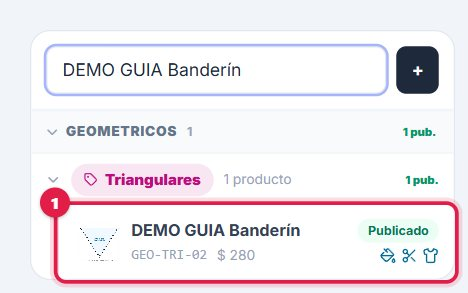
Figura 21. Ya está en la lista.
Sale "✅ Guardado — DEMO GUIA Banderín (publicado)", el encabezado dice ● PUBLICADO y en la lista aparece en Geometricos › Triangulares como Publicado.
No deja publicarSi falta algo, al guardar sale un aviso y el paso queda con el punto ámbar. Ver capítulo 11.
ETAPA 2Prendas con talles · Camisetas, Shorts, Remeras…
6Prenda con talles: alta, técnicas y cantidad
Ejemplo: "DEMO GUIA Camiseta", una camiseta de básquet en Camisetas › Básquet.
Alta y producción principal
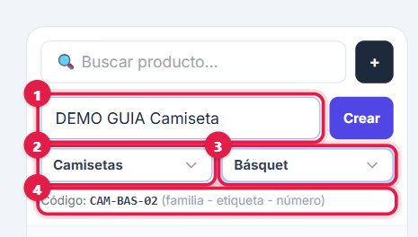
Figura 22. Camisetas › Básquet → CAM-BAS-02.
Igual que en la Etapa 1: +, 1 nombre, 2 familia Camisetas, 3 etiqueta Básquet, 4 el código sale solo, y Crear.
En Producción principal: Sublimacion y molde Obligatorio ("Prendas: no se publica sin molde de TizadaPro; en la solicitud se eligen modelo y tela por pieza").
Una prenda tiene un paso más: Variantes, entre Ficha de diseño y Revisar y publicar.
Paso 2 · Técnicas de decoración
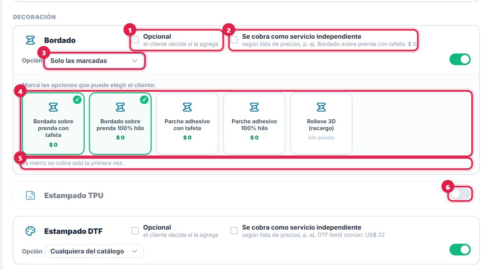
Figura 23. Bordado opcional, cobrado aparte y con opciones marcadas; DTF opcional.
1Opcional (sin tilde en Obligatoria): el cliente decide si lo agrega.
2Se cobra como servicio independiente (sin tilde en Incluida): se suma al pedido según la lista de precios.
3Opción: Cualquiera del catálogo, Solo las marcadas o Una fija.
4Con "Solo las marcadas" o "Una fija" aparecen las opciones del catálogo, con su precio: "Marcá las opciones que puede elegir el cliente".
5En Bordado y TPU: "La matriz se cobra solo la primera vez."
6Estampado TPU queda apagado: este producto no lo ofrece.
ConsejoLas opciones (y sus precios) se cargan una sola vez en la pestaña de catálogo Técnicas: cambiar ahí el precio de una opción lo cambia para todos los productos que la usan.
Paso 3 · Cantidad mínima y accesorios
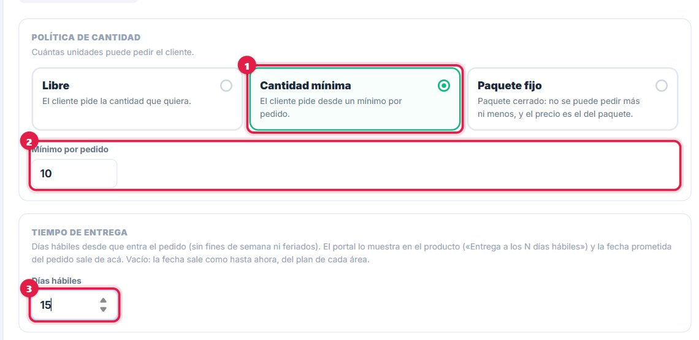
Figura 24. Mínimo 10 por pedido, entrega a los 15 días hábiles.
1Cantidad mínima: "El cliente pide desde un mínimo por pedido".
2Mínimo por pedido: 10. (Con Paquete fijo se pide "Unidades por paquete": el pedido queda fijo en esa cantidad. Para mezclar productos distintos se usa Combos y Promos.)
3Días hábiles de entrega: 15.
Artículos de stock que salen con el producto (mástil, base, estructura…): con + Agregar accesorio de stock se agrega un renglón: el artículo ("Elegí del stock…"), el depósito ("Depósito de ventas" u otro), la variante si tiene varias ("Se elige al cargar el pedido"), cuántos por unidad, Siempre va u Opcional, e Incluido en el precio o Se cobra aparte. Al cargar un pedido, cada accesorio genera su línea de venta y se descuenta del stock del WMS. Lo que está marcado "· solo stock" va siempre incluido y con la variante fija.
Paso 4 · Molde, telas y apliques. El tipo de molde queda en Con talles (viene así).
Molde de TizadaPro y modelos que se venden
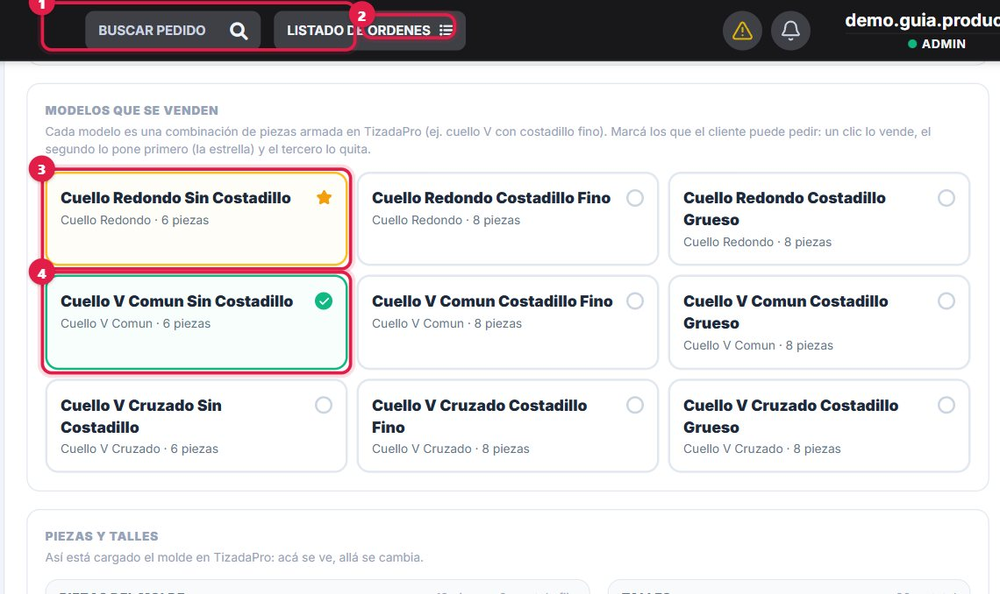
Figura 25. Molde "Camiseta Basket" y dos modelos que se venden.
1Molde de TizadaPro: abrí "Sin molde vinculado" y elegí el molde. Los que dicen "(sin piezas o talles)" están incompletos en TIZADA PRO. "Cambiar el molde borra los modelos y las telas elegidos."
2Actualizar vuelve a leer los moldes de TIZADA PRO.
3Modelos que se venden: un clic lo vende (✓ verde), el segundo clic lo pone primero (estrella ★) y el tercero lo quita. Acá: Cuello Redondo Sin Costadillo, primero.
4Cuello V Comun Sin Costadillo: se vende.
Piezas y talles (solo mirar)
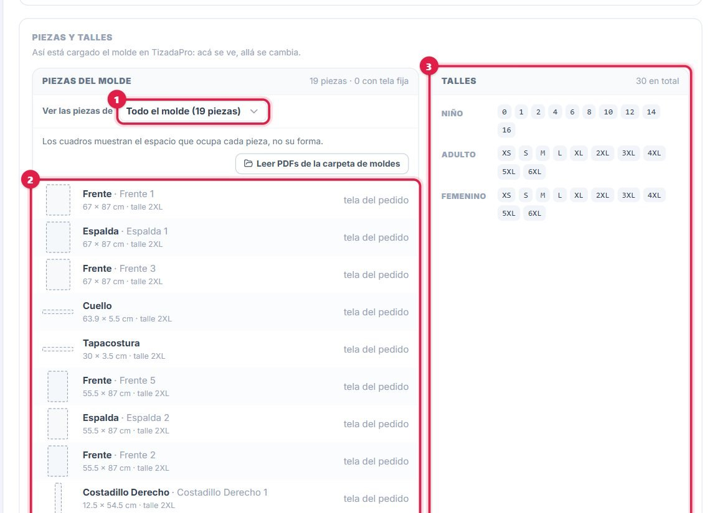
Figura 26. "Así está cargado el molde en TizadaPro: acá se ve, allá se cambia."
1Ver las piezas de: todo el molde o un modelo.
2Cada pieza con el espacio que ocupa en el talle guía. "tela del pedido" = la elige el cliente; con candado = tela fija del molde.
3Talles, agrupados en Niño, Adulto y Femenino.
El botón "Leer PDFs de la carpeta de moldes" arma las siluetas de las piezas desde la carpeta de moldes del servidor; no hace falta para configurar el producto.
Talles que se venden
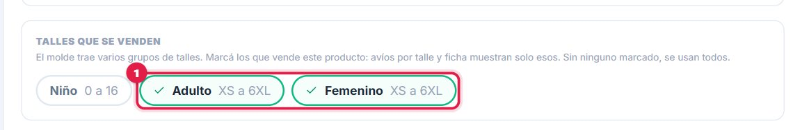
Figura 27. Se venden Adulto y Femenino.
Aparece solo si el molde trae más de un grupo. 1 Marcá los grupos que vende este producto: los avíos por talle y la ficha muestran solo esos. Sin ninguno marcado se usan todos ("Ninguno marcado: se usan los 30 talles del molde").
Telas que se ofrecen
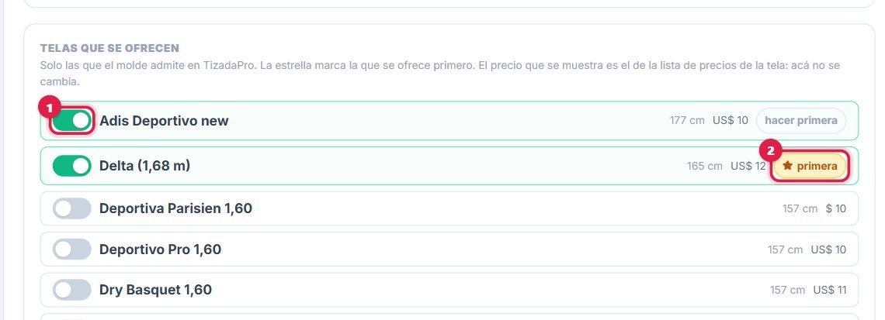
Figura 28. Las primeras telas del molde (la lista sigue).
1El interruptor ofrece la tela. Solo aparecen las que el molde admite en TIZADA PRO.
2"hacer primera" la pone primera (★ primera): es la que se ofrece de entrada.
Al lado, el ancho y el precio de la lista de precios de la tela ("Se cambia desde Precios, no acá"). Si una tela dice "Está oculta en nuestro catálogo…", hay que mostrarla en Artículos y sincronizar TizadaPro para poder ofrecerla.
Archivos de impresión
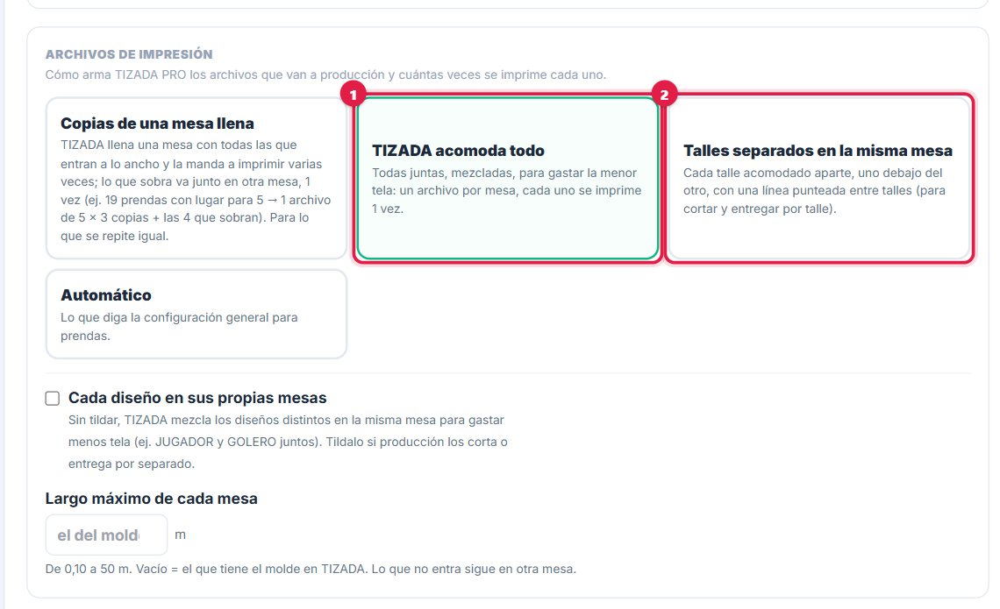
Figura 29. En prendas hay una opción más.
Las mismas opciones que en la Etapa 1, y además 2Talles separados en la misma mesa: cada talle acomodado aparte, con una línea punteada entre talles, para cortar y entregar por talle. Acá elegimos 1TIZADA acomoda todo.
Apliques
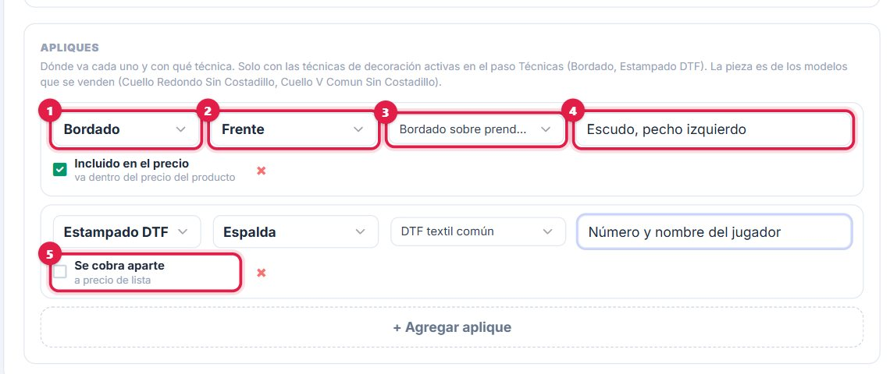
Figura 30. Escudo bordado en el frente y DTF en la espalda.
Con + Agregar aplique se suma un renglón:
1Técnica: solo las de decoración prendidas en Técnicas, más Etiqueta (grifa).
2Pieza del molde donde va (obligatoria): las de los modelos que se venden.
3Opción del catálogo de esa técnica, u "Opción libre".
4Observaciones (ej. "Escudo, pecho izquierdo").
5Incluido en el precio o Se cobra aparte (a precio de lista). La × quita el aplique.
Tocá Guardar cambios antes de seguir: las variantes se arman con los modelos guardados.
Paso 5. Todo lo que producción necesita para hacer la prenda; sale en la ficha técnica impresa.
Encabezado y dibujo
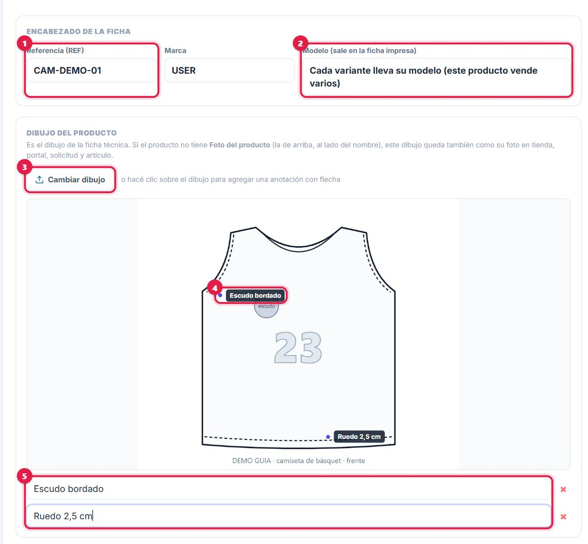
Figura 31. Encabezado y dibujo con dos anotaciones.
1Referencia (REF) y Marca.
2Modelo (sale en la ficha impresa): no se elige. Si el producto vende varios modelos dice "Cada variante lleva su modelo"; cada variante muestra el suyo.
3Cambiar dibujo (o "Subir dibujo o imagen"): se sube al instante.
4Clic sobre el dibujo: una anotación con flecha (se arrastra).
5El texto de cada anotación (ej. "Escudo bordado", "Ruedo 2,5 cm").
El material y las tallas de la ficha no se escriben: salen solos de las telas marcadas y de los talles que se venden.
Medidas de la prenda
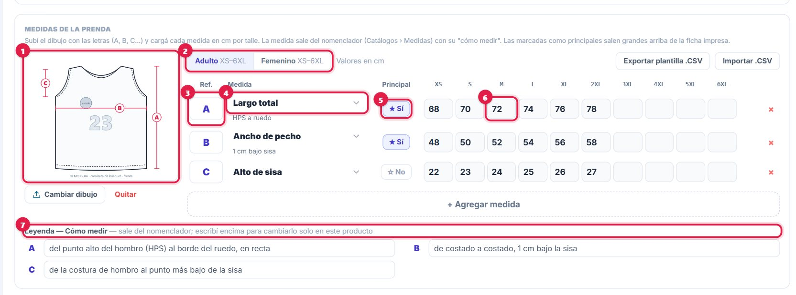
Figura 32. Dibujo con letras, tabla en cm por talle y "cómo medir".
1El dibujo con las letras (A, B, C…): "Subir dibujo" / "Cambiar dibujo"; se guarda al subirlo. "Quitar" lo saca.
2Las pestañas de talles: solo los grupos que se venden (acá Adulto y Femenino). "Valores en cm".
3Ref.: la letra de la medida en el dibujo (la próxima libre; se puede cambiar).
4Medida: sale del nomenclador (Catálogos › Medidas), con su referencia debajo (ej. "HPS a ruedo").
5Principal: "★ Sí" sale grande arriba de la ficha impresa.
6Los centímetros de cada talle.
7Leyenda — Cómo medir: sale del nomenclador; escribí encima para cambiarlo solo en este producto.
+ Agregar medida suma una fila. Exportar plantilla .CSV e Importar .CSV sirven para cargar la tabla desde una planilla.
Pantalla chicaCon muchos talles (ej. 10 de adulto) y una pantalla de 1440 px de ancho, las celdas quedan muy angostas y los números no se leen. Agrandá la ventana, achicá el zoom del navegador (Ctrl y −) o cargá la tabla con la plantilla .CSV.
Avíos por talle
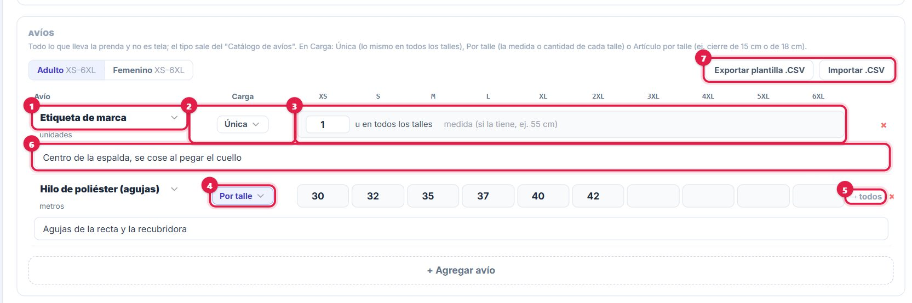
Figura 33. Etiqueta de marca (Única) e hilo (Por talle).
"Todo lo que lleva la prenda y no es tela; el tipo sale del Catálogo de avíos." Con + Agregar avío:
1El avío del catálogo (abajo dice la unidad: unidades, metros…).
2Carga: Única (lo mismo en todos los talles), Por talle (la medida o cantidad de cada talle) o Artículo por talle (ej. cierre de 15 cm o de 18 cm).
3Con Única: la cantidad "en todos los talles" y, si tiene, la medida.
4Con Por talle: un valor por talle (acá, los metros de hilo de XS a 2XL).
5→ todos copia el primer valor a todos los talles del grupo.
6La nota: dónde va y cómo se pone.
7Plantilla .CSV para cargar desde una planilla.
Costura paso a paso
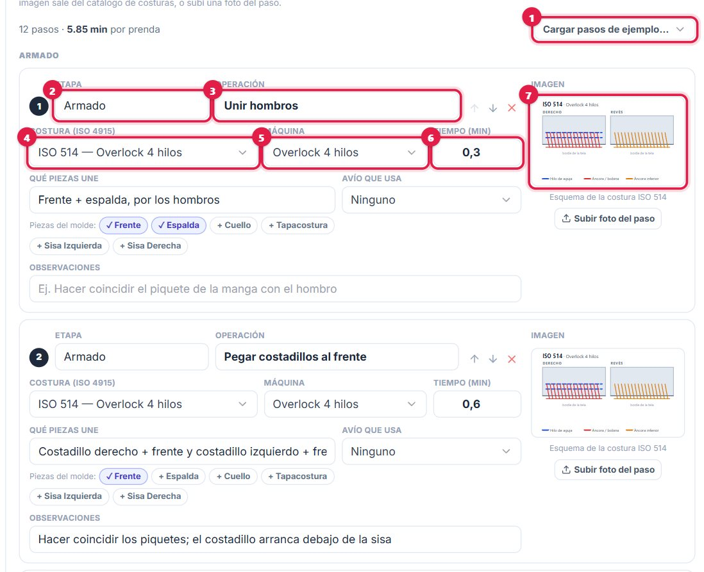
Figura 34. Los dos primeros pasos del ejemplo "Camiseta de básquet".
1Cargar pasos de ejemplo…: Remera / camiseta cuello redondo, Camiseta de básquet (musculosa con costadillos), Short deportivo con elástico o Windflag. Reemplaza la lista actual.
2Etapa (texto libre: Armado, Terminación…). Los pasos seguidos con la misma etapa se agrupan.
3Operación (ej. "Unir hombros").
4Costura (ISO 4915), o "Sin costura (operación manual)".
5Máquina (se propone la típica de la costura).
6Tiempo (min) por prenda. Arriba se suma el total.
7Imagen: el esquema de la costura, o "Subir foto del paso".
También: Qué piezas une (con botones de las piezas del molde), Avío que usa y Observaciones. Las flechas ↑ ↓ cambian el orden y la × quita el paso. + Agregar paso suma uno al final.
Notas sueltas y ficha técnica
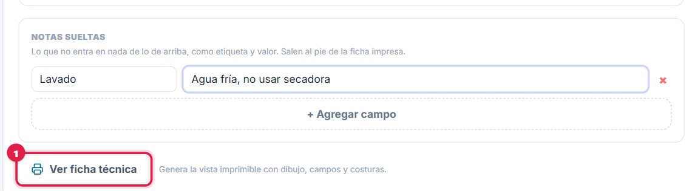
Figura 35. Notas sueltas y "Ver ficha técnica".
Notas sueltas: "Lo que no entra en nada de lo de arriba, como etiqueta y valor" (ej. Lavado · Agua fría, no usar secadora). Con 1Ver ficha técnica se abre la hoja imprimible:
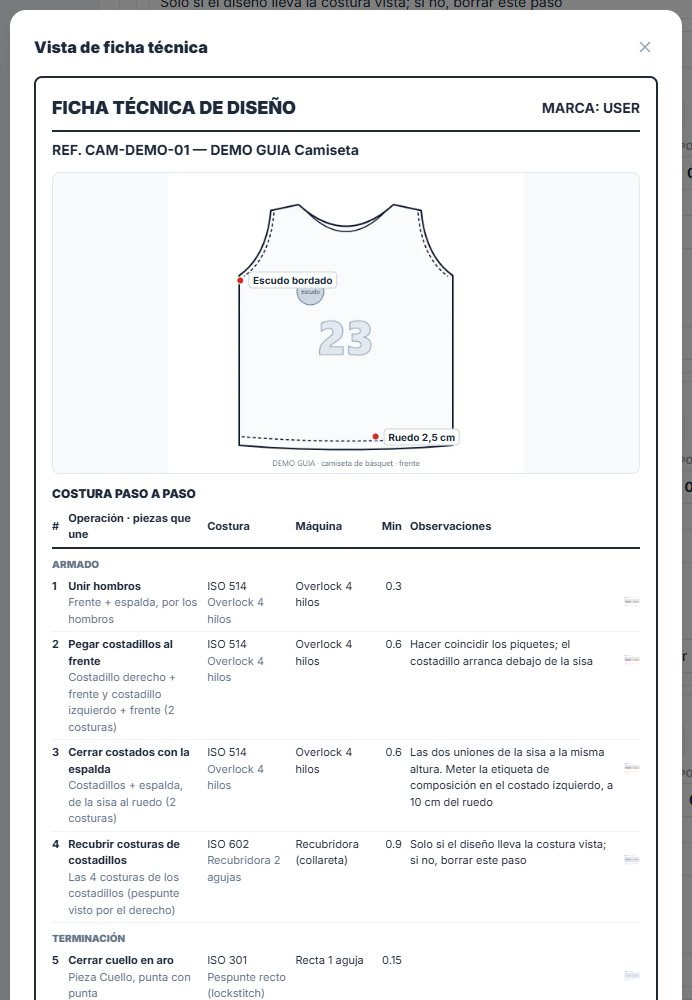
Figura 36. Arriba: encabezado, dibujo y costura.
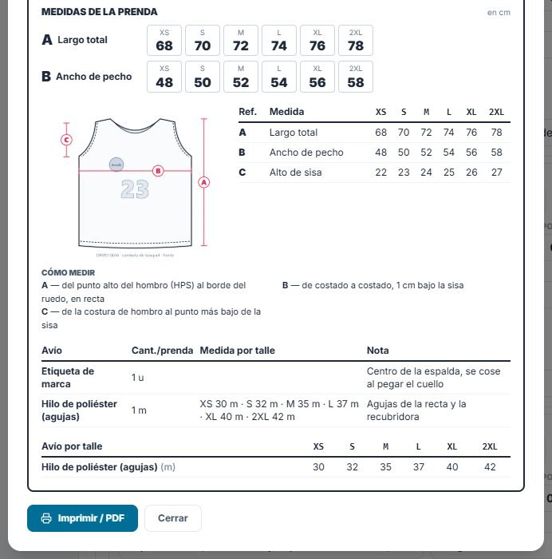
Figura 37. Abajo: medidas y avíos por talle.
Abajo de la hoja: Imprimir / PDF y Cerrar. Después, Guardar cambios.
Figura 38. Dos modelos que se venden, todavía sin variante.
1 "Cada modelo del molde que se vende puede ser una variante: un artículo más, con su código, su nombre, su foto y su estado. Es lo que se elige en la solicitud y sale en el pedido y la factura." 2 En "Modelos que se venden sin variante" tocá Crear las 2 variantes (o Crear variante en uno).
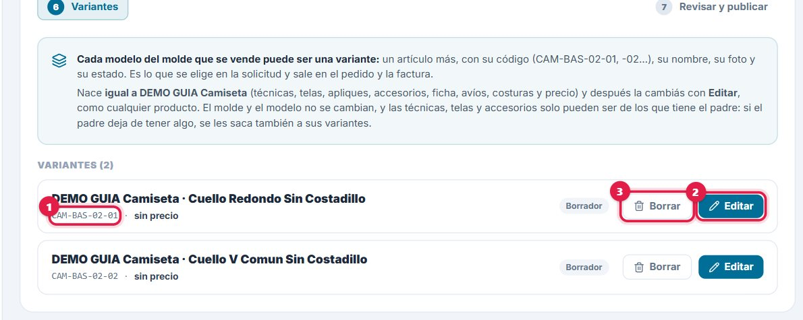
Figura 39. "✅ 2 variantes creadas: CAM-BAS-02-01, CAM-BAS-02-02".
1Cada variante tiene el código del padre más un número.
2Editar la abre en el editor.
3Borrar la borra (con la misma ventana del capítulo 10).
Ojo con el precioLa variante nace igual al padre en ese momento: técnicas, telas, apliques, accesorios, ficha, avíos, costuras y precio. Si el padre todavía no tenía precio, la variante queda "sin precio": cargáselo a cada una (o poné el precio del padre antes de crearlas).
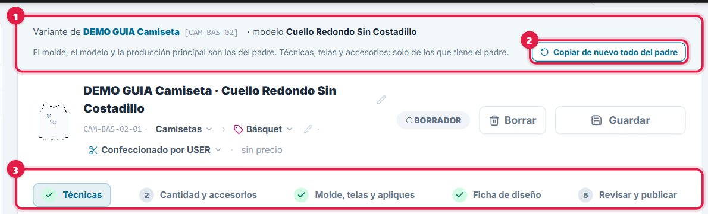
Figura 40. Una variante abierta en el editor.
1"Variante de DEMO GUIA Camiseta · modelo …": el molde, el modelo y la producción principal son los del padre. Tocá el nombre del padre para volver a él.
2Copiar de nuevo todo del padre: la variante vuelve a quedar igual al padre (se pierde lo que le cambiaste).
3La variante no tiene los pasos Producción principal ni Variantes. Técnicas, telas y accesorios: solo de los que tiene el padre.
Precio y publicar
Escribí el precio en el encabezado (como en la Etapa 1) y andá a Revisar y publicar:
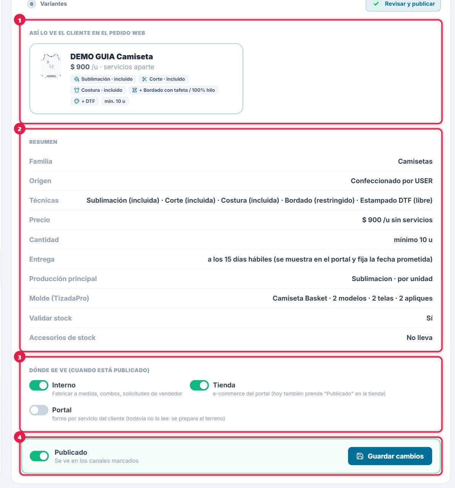
Figura 41. Vista previa, resumen, canales y publicar.
1La vista previa: las técnicas opcionales salen con "+" (ej. "+ Bordado …") y las que se cobran aparte, sin "· incluido".
2El resumen: cantidad "mínimo 10 u", entrega "a los 15 días hábiles", molde "Camiseta Basket · 2 modelos · 2 telas · 2 apliques".
3Dónde se ve: Interno y Tienda.
4Publicado y Guardar cambios.
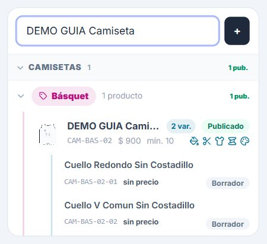
Figura 42. El padre con sus variantes.
En la lista, la camiseta aparece en Camisetas › Básquet con la pastilla 2 var. y sus variantes colgando debajo. Al tocar una variante se abre en el editor.
Cada variante se publica aparte (en su propio paso Revisar y publicar), cuando tenga su precio.
Para hacer uno parecido, copiá. Para sacar uno que nunca se usó, borralo.
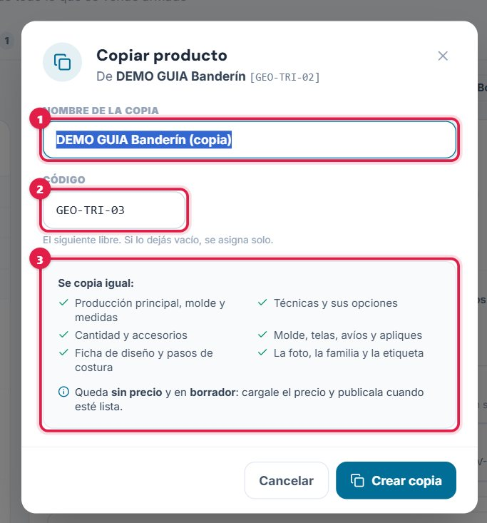
Figura 43. Copiar producto.
Copiar
En el encabezado, Copiar. 1 Poné el nombre de la copia y 2 revisá el código ("El siguiente libre. Si lo dejás vacío, se asigna solo").
3 "Se copia igual": producción principal, molde y medidas, técnicas, cantidad y accesorios, molde, telas, avíos y apliques, ficha de diseño y pasos de costura, la foto, la familia y la etiqueta.
"Queda sin precio y en borrador: cargale el precio y publicala cuando esté lista." Tocá Crear copia.
EjemploPara una toalla rectangular, copiá la Toalla cuadrada y cambiá las medidas.
Borrar
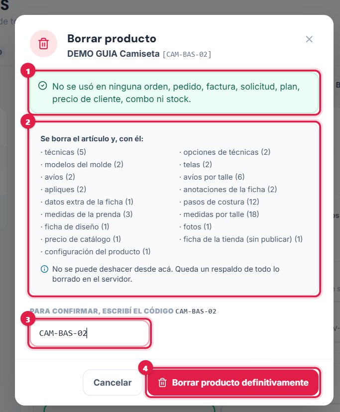
Figura 44. Borrar producto.
En el encabezado, Borrar. Primero se revisa si el producto se usó en algún lado.
1"No se usó en ninguna orden, pedido, factura, solicitud, plan, precio de cliente, combo ni stock."
2"Se borra el artículo y, con él:" la lista de lo que cuelga del producto. Queda un respaldo en el servidor.
3Para confirmar, escribí el código.
4Borrar producto definitivamente.
Cuándo no se puedeSi ya se usó, dice "No se puede borrar: ya se usó en …" y dónde. Si ya no se vende, dejalo en borrador. Si está publicado en la tienda, primero apagá Tienda y Publicado y guardá. Un padre con variantes: primero se borran las variantes.
Los avisos más comunes, tal cual salen en pantalla, y qué hacer.
Aviso
Qué hacer
Un paso con punto ámbar
Pasá el mouse por el paso: dice "Falta: …" (ej. "elegir la variable a medida de TIZADA PRO", "la pieza del molde de cada aplique").
"Para publicar, primero vinculá el molde de TizadaPro (paso "Molde, telas y apliques"), o marcá en "Producción principal" que el molde es opcional o que no lleva."
Elegí el molde (con talles) o la variable (a medida) en el paso 4.
"Cada aplique necesita una pieza del molde. Elegila en "Molde, telas y apliques"."
En cada renglón de Apliques, elegí la pieza.
"Para publicar, los apliques tienen que ser de técnicas activas. Activá … en "Técnicas" o quitá esos apliques."
Prendé la técnica en el paso 2 o sacá el aplique.
"Poné la cantidad mínima (entero mayor a 0)." · "Poné la cantidad fija del paquete (entero mayor a 0)."
Completá el número en Cantidad y accesorios.
"No se puede leer TIZADA PRO: …" · "No se pudo leer TizadaPro: …"
La pantalla no llega a TIZADA PRO. Avisá a Sistemas; mientras tanto no cambies el molde.
"TIZADA PRO todavía no tiene ninguna variable a medida: hay que cargarla allá."
La variable se carga en TIZADA PRO. Después tocá Actualizar.
"El molde no tiene telas permitidas cargadas en TizadaPro. Cargalas allá y tocá Actualizar."
Las telas del molde se cargan en TIZADA PRO.
"Este molde no tiene modelos cargados en TizadaPro: el producto se vende con su única forma."
Normal si el molde tiene una sola forma. Si debería tener modelos, se cargan en TIZADA PRO.
"No se puede borrar: ya se usó en …"
Dejalo en borrador.
Qué no se hace desde acáMoldes, variables a medida, piezas, talles, modelos y telas permitidas: en TIZADA PRO. Precio de las telas: en Precios. Opciones de técnicas, medidas, avíos, costuras e hilos: en las pestañas de catálogos de esta misma pantalla.